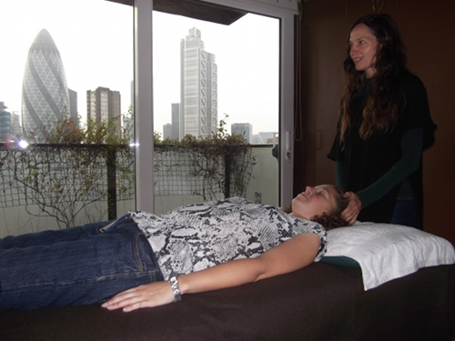

Treatment Details
Treatments are held at Jane's home on Commercial St, London E1, close to Spitalfields Market. Sessions cost £40 or £30 for concessions and can be tailored to suit individual needs, starting from 45 minutes and lasting up to 75 minutes.
Sessions are conducted fully clothed and involve lying down comfortably on a treatment bed.